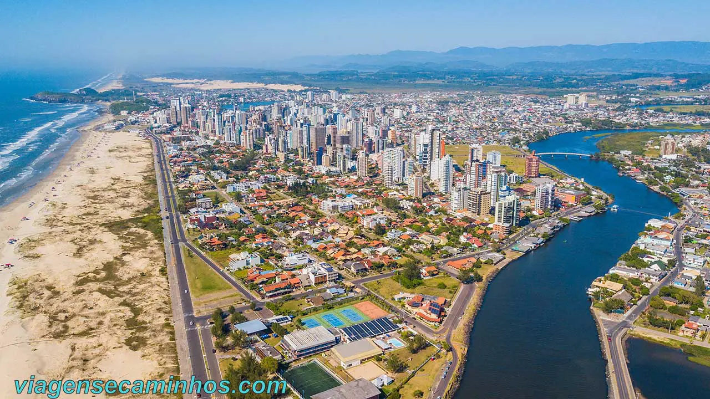

O Rio Grande do Sul é o estado mais ao sul do Brasil e possui forte tradição cultural ligada aos costumes gaúchos. Sua capital é Porto Alegre, importante centro econômico e cultural da região. O estado se destaca pela produção agropecuária, especialmente de arroz, soja e uva, além da criação de gado. O Rio Grande do Sul também é conhecido pelas festas típicas, pelo chimarrão e pelas belas paisagens naturais, como serras e campos.
